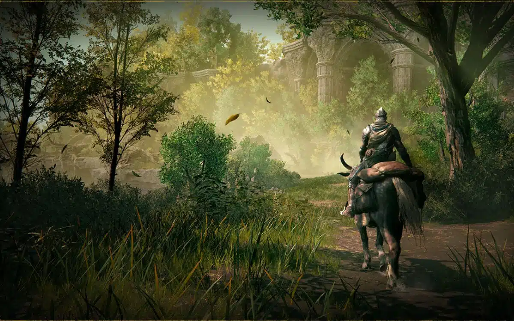

The Golden Order has been broken.
Those few inhabitants who are not mad or hostile linger near the broken remnants of cities left behind by the Shattering. They may have answers for you, if you help them. Above them all, ensconced in vast legacies bristling with traps, secrets, and guardians, the Demigods – warped Lords who began as members of a royal and noble family – rule their domains with the unyielding power granted by shards of the Elden Ring.

A NEW FANTASY WORLD
Journey through the Lands Between, a new fantasy world created by Hidetaka Miyazaki, creator of the influential DARK SOULS video game series, and George R. R. Martin, author of The New York Times best-selling fantasy series, A Song of Ice and Fire.
WORLD EXPLORATION IN THE LANDS BETWEEN
ELDEN RING features vast fantastical landscapes and shadowy, complex dungeons that are connected seamlessly.